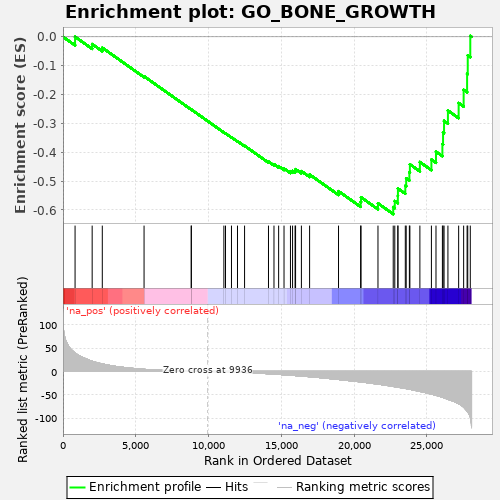

| | | Dataset | PRAD |
| Phenotype | NoPhenotypeAvailable |
| Upregulated in class | na_neg |
| GeneSet | GO_BONE_GROWTH |
| Enrichment Score (ES) | -0.614482 |
| Normalized Enrichment Score (NES) | -1.5546178 |
| Nominal p-value | 0.0010548523 |
| FDR q-value | 0.06725361 |
| FWER p-Value | 1.0 |
Table: GSEA Results Summary

Fig 1: Enrichment plot: GO_BONE_GROWTH
Profile of the Running ES Score & Positions of GeneSet Members on the Rank Ordered List
| PROBE | GENE SYMBOL | GENE_TITLE | RANK IN GENE LIST | RANK METRIC SCORE | RUNNING ES | CORE ENRICHMENT | | 1 | ZMPSTE24 | | | 829 | 39.177 | 0.0001 | No |
| 2 | POC1A | | | 2004 | 21.752 | -0.0253 | No |
| 3 | COMP | | | 2700 | 16.089 | -0.0379 | No |
| 4 | VWA2 | | | 5570 | 4.405 | -0.1369 | No |
| 5 | VWA1 | | | 8813 | 0.416 | -0.2522 | No |
| 6 | MMP13 | | | 8818 | 0.412 | -0.2520 | No |
| 7 | COL12A1 | | | 11055 | -0.642 | -0.3313 | No |
| 8 | SMPD3 | | | 11167 | -0.738 | -0.3347 | No |
| 9 | OSTN | | | 11577 | -1.130 | -0.3484 | No |
| 10 | STC1 | | | 11990 | -1.592 | -0.3619 | No |
| 11 | POR | | | 12477 | -2.174 | -0.3776 | No |
| 12 | MATN4 | | | 14120 | -4.790 | -0.4326 | No |
| 13 | ANXA2P2 | | | 14498 | -5.542 | -0.4418 | No |
| 14 | FGFR3 | | | 14818 | -6.194 | -0.4485 | No |
| 15 | COCH | | | 15188 | -7.014 | -0.4563 | No |
| 16 | MATN3 | | | 15630 | -8.022 | -0.4660 | No |
| 17 | MSX2 | | | 15775 | -8.333 | -0.4648 | No |
| 18 | EVC | | | 15948 | -8.706 | -0.4643 | No |
| 19 | LEP | | | 15982 | -8.783 | -0.4589 | No |
| 20 | CARM1 | | | 16382 | -9.738 | -0.4657 | No |
| 21 | NPPC | | | 16946 | -11.223 | -0.4773 | No |
| 22 | COL20A1 | | | 18933 | -17.188 | -0.5351 | No |
| 23 | LEPR | | | 20451 | -22.351 | -0.5723 | No |
| 24 | COL14A1 | | | 20480 | -22.495 | -0.5562 | No |
| 25 | MATN2 | | | 21644 | -27.140 | -0.5771 | No |
| 26 | ANXA2 | | | 22692 | -32.011 | -0.5902 | Yes |
| 27 | COL6A3 | | | 22799 | -32.631 | -0.5693 | Yes |
| 28 | RARA | | | 23010 | -33.670 | -0.5512 | Yes |
| 29 | ANXA6 | | | 23016 | -33.710 | -0.5258 | Yes |
| 30 | FGFR2 | | | 23522 | -36.355 | -0.5163 | Yes |
| 31 | TGFBR2 | | | 23583 | -36.668 | -0.4906 | Yes |
| 32 | RARB | | | 23802 | -37.921 | -0.4697 | Yes |
| 33 | THBS3 | | | 23837 | -38.151 | -0.4419 | Yes |
| 34 | DDR2 | | | 24524 | -42.706 | -0.4340 | Yes |
| 35 | ECM1 | | | 25316 | -48.377 | -0.4256 | Yes |
| 36 | SCARA3 | | | 25631 | -50.979 | -0.3981 | Yes |
| 37 | COL7A1 | | | 26071 | -55.102 | -0.3720 | Yes |
| 38 | BNC2 | | | 26117 | -55.499 | -0.3315 | Yes |
| 39 | MATN1 | | | 26185 | -56.313 | -0.2912 | Yes |
| 40 | VIT | | | 26451 | -59.446 | -0.2556 | Yes |
| 41 | COL6A2 | | | 27188 | -68.991 | -0.2296 | Yes |
| 42 | RARG | | | 27531 | -76.397 | -0.1838 | Yes |
| 43 | COL6A1 | | | 27769 | -84.714 | -0.1281 | Yes |
| 44 | COL21A1 | | | 27813 | -86.238 | -0.0642 | Yes |
| 45 | COL27A1 | | | 27988 | -97.011 | 0.0031 | Yes |
Table: GSEA details [plain text format]
Fig 2: GO_BONE_GROWTH: Random ES distribution
Gene set null distribution of ES for GO_BONE_GROWTH